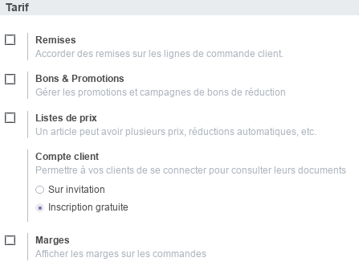
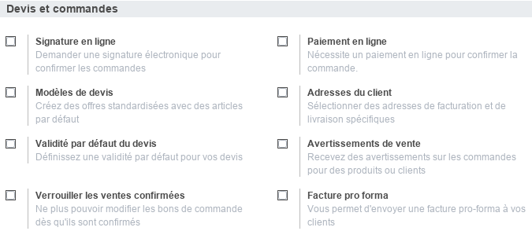
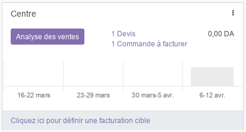
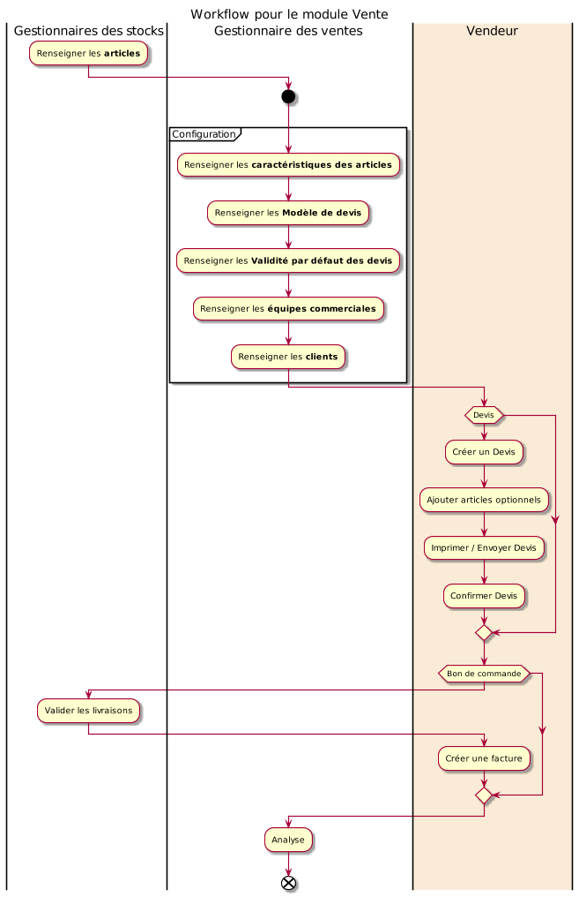

Module Vente¶
Ce document illustre les différentes fonctionnalités du module Vente d’odoo 13 community.
Présentation du module¶
Ce module est destiné à la gestion des devis professionnels. Il permet :
de facturer les clients, d’enregistrez les contrats, de suivre les étapes de facturation et de maintenir les opportunités de renouvellement et de vente incitative.
de présentez les produits et services de manière profesionnelle.
d’envoyez des devis clairs et complets aux prospects et de gardez automatiquement une trace des échanges avec les clients.
de créez des alertes personnalisées pour les activités.
d’augmentez le volume des ventes en proposant automatiquement des accessoires ou des options supplémentaires telles qu’une remise.
de créez, déployez et ajustez la stratégie de prix afin de maximiser les revenus.

Configuration (admin)¶
Cette section, réservée aux administrateurs et Gestionnaires des ventes, permet de définir les paramètres généraux du module, tel que le configurateur de produits, les tarifs, les devis, les commandes, l’exépdition et la facturation.
Configuration d’articles¶
Cette partie, permet de définir les paramètres du Configurateur de produits, qui offre au Gestionnaires des ventes la possibilité de renseigner des variantes d’articles pour chaque produit ou services. Pour plus d’informations consulter le module Stock
Configuration des Tarif¶

L’option Remise permet aux vendeurs de proposer des remises sur des articles.
L’option Bons & Promotions active de nouvelles fonctionnalités permettant aux Gestionnaires des ventes d’initier des campagnes de promotions et de bons de réductions.
L’option Liste de prix active une nouvelle fonctionnalité permettant aux Gestionnaires des ventes de définir plusieurs prix pour chaque article en fonction de périodes pédéterminées.
L’option Compte client permet de définir le type d’accès accodré aux clients sur le portail de l’entreprise.
L’option Marges permet au vendeurs d’afficher les marges sur les commandes.
Configuration des Devis et commandes¶

L’option Signature en ligne permet aux vendeurs de demander une signature éléctronique pour confirmer les commandes.
L’option Paiement en ligne permet aux Gestionnaires des ventes d’activer les paiement en lignes des factures.
L’option Modèle de devis active de nouvelles fonctionnalités permettant aux Gestionnaires des ventes de créer des modèles prédéfinis réutilisables.
L’option Adresses du client permet aux vendeurs de sélectionner des adresses de facturation et de livraison spécifiques.
L’option Validité par défaut du devis permet aux Gestionnaires des ventes de définire une validité par défaut pour les devis (ex. 30 jours).
L’option Avertissements de vente permet aux vendeurs de recevoire des avertissements sur les commandes pour des produits ou clients spécifiques.
L’option Verrouiller les ventes confirmées permet de ne plus pouvoir modifier les bons de commande dès qu’ils sont confirmés.
L’option Facture pro forma permet aux vendeurs d’envoyer des factures pro-forma aux clients.
Configuration de l’Expédition¶
L’option Frais de livraison permet aux vendeurs de calculer les frais de port des commandes en fonction de méthodes d’expédition prédifinis.
Équipes commerciales¶
Cette section permet de renseigner les informations nécessaires aux équipes commerciales de l’entreprise. Les membes des équipes doivent tous disposer de comptes utilisateurs.

Commandes¶
Cette partie permet de gérer les Devis et les Commandes.
Devis¶
Cette section permet de gérér les Devis clients en renseigants toutes les informations nécessaires tel que le client, la date, les conditions de paiement, les termes, les articles demandés et éventuellement des articles optionnels.

Ce Devis, imprimable avec la commande _Imprimer/Devis, progresse par plusieurs état qui sont : Devis, Devis envoyé et Bon de Commande. Le Devis peut aussi être envoyé directement par email. La commande Confirmer permet de promouvoir le Devis en Bon de Commande.
Commandes¶
Cette section permet de gérér les Bons de commandes clients en renseigants toutes les informations nécessaires tel que le client, la date, les conditions de paiement, les termes et les articles commandés.

Ce Bon de commande, imprimable avec la commande _Imprimer/Commande, peut être envoyé directement par email.
Après validation de la livraison des articles par le Gestionnaire des stocks, les quantités livrés se mettront à jours automatiquement.
Une fois que les articles livrés au client, le Gestionnaire des ventes peut Créer une facture, qui doit faire l’objet d’une Comptabilisation par un Gestionnaire des factures afin de clôturer la vente. Pour plus de détails, consulter le module Facturation.

Equipes commerciales¶
Cette section offre une tableau de bord synthétique des ventes effectuées pour chaque équipe commerciale.

Clients¶
Cette section permet de gérer les clients de l’entreprise. Pour plus d’informations, consulter le module Facturation.
A facturer¶
La section Commandes à facturer offre une liste synthétique des commandes en attente de facturation.
Articles¶
Cette section permet de consulter les articles gérés par l’entreprise et pouvant être vendus. Pour plus d’informations, consulter le module Stock / Article.
Analyse¶
La partie analyse permet aux Gestionnaires des ventes de visualiser des vues synthétiques de la situation des ventes sous différentes formes : tableau croisé, graphes.
Workflow¶

Plus de détails¶
Pour la collaboration sur les formulaires de ce module, consulter la fonctionnalité conversations.